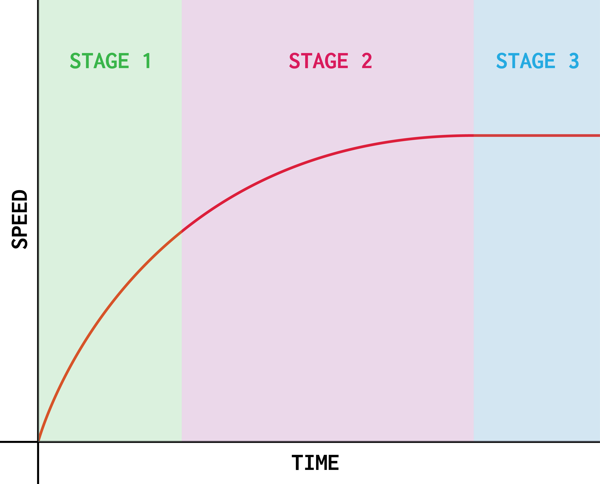

For the intents and purpose of this website, there are two forces
which affect the speed of a falling object, which are
the air resistance on the object, and
the weight of the object, affected by gravity.
The stages of falling
When an object falls, it goes through three different stages
before it hits the ground.
First, the object accelerates. This is because of its
weight, creating a resultant force in the down direction.
Then, the air resistance increase. Its weight remains the
same, but it doesn't accelerate so quickly.
The weight then becomes cancelled out by the air
resistance, resulting in no resultant force, which
is called terminal velocity.

Air Resistance
Air resistance has a huge effect on falling objects. In a vacuum
(where there's no air resistance,) a feather and a coin will fall
at the same speed, however with air resistance, the coin will
fall faster.
This is because the air resistance acting on the coin has to be
a lot more than on the feather, to slow it down.